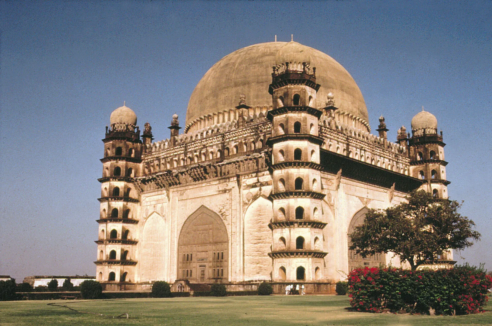

Bijapur, officially known as Vijayapura,[2] is the district headquarters of Bijapur district of the Karnataka state of India. It is also the headquarters for Bijapur Taluk. Bijapur city is well known for its historical monuments of architectural importance built during the rule of the Adil Shahi dynasty. It is also well known for the sports by the popular Karnataka premier league team as Bijapur Bulls. Bijapur is located 530 km (330 mi) northwest of the state capital Bangalore and about 550 km (340 mi) from Mumbai and 384 km (239 mi) west of the city of Hyderabad.
The city was established in the 10th–11th centuries by the Kalyani Chalukyas and was known as Vijayapura (city of victory). The city was passed to Yadavas after Chalukya's demise. In 1347, the area was conquered by the Bahmani Sultanate. After the split of the Bahmani Sultanate, the Bijapur Sultanate ruled from the city. Relics of the Sultanates' rule can be found in the city, including the Bijapur Fort, Bara Kaman, Jama Masjid, and Gol Gumbaz.
Bijapur, one of the popular heritage city located in the Karnataka state of India, is also one of the top ten populated cities in Karnataka. The Bijapur city has been declared as one of the corporations in the state of Karnataka in 2013.[3] Bijapur urban population as per 2011 census is 326,000, perhaps the 9th biggest city in Karnataka. Vijayapura Mahanagara Palike (VMP) is the newest Municipal Corporation formed under the KMC act along with Shimoga and Tumkur Municipal Corporations.[4] Administratively, Bijapur district comes under Belgaum division along with Bagalkote, Belgaum, Dharwad, Gadag, Haveri and Uttara Kannada (Karwar) districts. The civic administration of the city is managed by the Bijapur City Corporation and office of Deputy Commissioner in Bijapur. The office of Deputy Commissioner has the responsibility of rural areas in Bijapur, while the corporation administrates the city of Bijapur. Effective administration of the heritage city of Bijapur is the main intention behind all the activities of Vijayapura City Corporation.